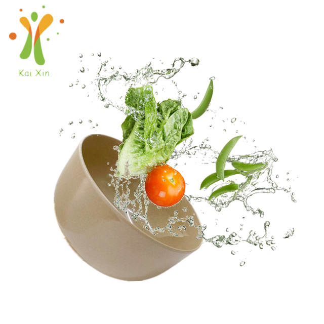

Rice Husk vs Bamboo vs Ceramic: Which Eco Dinnerware Actually Costs Less Over Five Years?
Ask three suppliers what dinnerware costs and you'll get three unit prices. Ask what it costs — over five years of real service — and you get a very different answer. Purchase price is the entry ticket; the rest of the bill is written in freight weight, breakage rates, replacement orders and compliance testing. Importers who quote on unit price alone routinely discover that the "cheap" material was the expensive one. This guide builds a simple cost model comparing rice husk (plant fiber), bamboo fiber and ceramic tableware the way a CFO would look at it — and shows where each material genuinely wins.

A rice husk plate with a ceramic-look finish — the aesthetic of stoneware at a fraction of the shipping weight.
Purchase Price Is Only the Entry Ticket
On a per-piece FOB basis, the three materials sit in roughly the same band for everyday SKUs — a basic plate from any of the three can be priced within cents of the others depending on finish, size and order volume. That's exactly why unit price is a poor decision variable: it's the number that varies least over the life of the product. What separates the materials is everything that happens after the goods leave the factory — how much space and weight they consume in a container, how many of them survive their first year of commercial service, how often you reorder, and what documentation they demand. If you're building a quote comparison, our earlier rice husk vs bamboo vs plastic material comparison covers the material-level story; this article stays strictly on the money.
The Hidden Cost Ceramic Ships With: Weight
Ceramic's cost problem isn't the kiln — it's the container. As we explained in our container loading and MOQ guide, lightweight plant fiber tableware is cube-limited: you fill a 40HQ container's roughly 68 cubic meters long before you approach its weight allowance. Ceramic is the opposite — dense and heavy — so on many trade lanes a ceramic order runs into weight limits, meaning fewer sellable units per container and a higher freight cost per piece. There's also the handling bill: heavier cartons cost more to move at every step, from the factory floor to the stockroom to the table. For a café or catering operation, staff carrying stacks of stoneware feel that cost every single shift, even if it never appears on an invoice.
Breakage: The Line Item That Never Stops
Ask any hospitality operator what actually kills their tableware budget and the answer is almost never the purchase price — it's replacement. Ceramic chips and shatters: on dropped-edge counters, in dishwashers racked by busy staff, in catering vans. Food-service operators commonly budget a steady attrition rate for ceramic, replacing pieces every quarter, forever. Plant fiber materials behave differently: rice husk and bamboo fiber composites are engineered to deform rather than shatter, so a dropped plate is usually a plate you pick up, not one you sweep up. For a distributor, this matters commercially too — a material that customers reorder because it broke looks like repeat revenue, but it's repeat revenue built on your customer's frustration, and price-sensitive buyers eventually notice which supplier's products quietly disappear from their shelves.

Plant fiber bowls are built for daily commercial service — knocked, dropped and washed, not shelved.
Bamboo Fiber's Cost Question: What's Holding It Together
Bamboo fiber tableware has a genuine cost advantage in feedstock — bamboo grows fast and cheap. But molded bamboo fiber products need binders to hold their shape, and this is where careful buyers slow down. Depending on the manufacturer, "bamboo fiber" tableware may blend in melamine-formaldehyde or other resins, which changes both the product's story and its compliance paperwork. We're not saying all bamboo fiber products are unsafe — we're saying the material category is less standardized than buyers assume, and verifying what you're actually buying costs time and, sometimes, third-party testing. Our standing advice applies to every material: ask the supplier for food-contact migration test documentation for the exact product and recipe you're purchasing, and treat reluctance to provide it as data. Products we ship come SGS tested for food contact, with reports available on request.
The Five-Year Cost Model
Here's the model we walk buyers through, with illustrative planning figures for a food-service program using 10,000 plates per year. Treat the numbers as a structure to fill with your own quotes — not as a price list:
| Cost component (5 years) | Ceramic | Bamboo fiber | Rice husk |
|---|---|---|---|
| FOB purchase price | Moderate–high per piece | Low–moderate | Low–moderate |
| Freight per sellable piece | High — weight-limited loading | Low — cube-limited | Low — cube-limited |
| Attrition & reorders | Ongoing — chips and shatters | Low if well-made; verify binders | Low — deforms, rarely shatters |
| Compliance/testing burden | Mature category, well understood | Verify binder content per supplier | Verify per supplier (SGS tested available) |
| Handling & storage | Heavy — labor and racking cost | Light | Light |
| Five-year trend | Rises with replacements | Flat if quality holds | Flat — one order, long service |
Illustrative structure, not a quotation. Fill each row with your own FOB quotes, your forwarder's freight per cubic meter, and your operation's real attrition history.
Run the model honestly and a pattern emerges: for retail shelves, all three can work — ceramic sells on perceived value, and premium packaging can justify it. For food service — cafés, caterers, school programs, canteens — the replacement line dominates everything else, and that's where lightweight plant fiber pulls ahead. For importers building a private-label line, the freight-per-piece column decides your landed cost competitiveness at retail, which decides your margin.
Where Each Material Genuinely Wins
To be fair to all three: ceramic still wins where heft is the brand — fine dining, hotel table service, gift sets — and its supply chain is the most mature. Bamboo fiber can win on feedstock economics when the manufacturer's binder recipe is clean and documented. Rice husk wins on the combination that food service actually buys: light shipping weight, shatter-resistant daily durability, a stable agricultural byproduct as feedstock, and a dishwasher-tested service life — all while offering a ceramic-look finish for buyers who want stoneware aesthetics without stoneware logistics. Our ceramic-look round plates, reusable bowls and the rest of the product range are built around exactly that position.
Quick Checklist: Comparing Quotes Across Materials
✅ Compare landed cost per piece, not FOB — include real freight from your forwarder
✅ Ask each supplier for carton dimensions and pieces per carton to compute freight yourself
✅ Demand food-contact migration test reports for the exact SKU and recipe
✅ For bamboo fiber, ask specifically what binders are used and request documentation
✅ Estimate attrition from your own operation's history — ceramic's is never zero
✅ Model five years, including reorders, before locking a material choice
Frequently Asked Questions
Is rice husk tableware cheaper than ceramic?
On the factory invoice, they can be close — sometimes ceramic is even cheaper per piece for simple shapes. The difference appears after shipping and service: rice husk weighs a fraction of ceramic, loads by cube instead of weight, and doesn't generate a steady replacement stream. Over a five-year food-service program, the total cost of rice husk typically comes in well below ceramic once you count freight and attrition — which is why cafés and caterers keep converting.
Does bamboo fiber tableware contain plastic binders?
It depends entirely on the manufacturer and the specific product recipe — molded bamboo fiber generally needs some binder to hold its shape, and formulations vary widely across the market. That's not a reason to avoid the material; it's a reason to buy from suppliers who state their recipe and back it with food-contact migration test reports. Any reputable factory will document exactly what's in the product you're buying.
How do I compare quotes between different materials fairly?
Normalize everything to landed cost per sellable piece: FOB price plus ocean freight divided by units, plus duty and inland costs. Then add your operation's realistic attrition rate multiplied by the replacement price, and annualize over the service life. Two quotes that look identical per piece can differ substantially once carton density and weight are accounted for — the supplier's packing list (carton dimensions, pieces per carton, gross weight) is what makes the comparison real.
Can rice husk tableware really look like ceramic?
Modern plant fiber molding has closed most of the visual gap. Glazed-look finishes, textured surfaces and matte colorways let rice husk plates pass as stoneware on the table — our ceramic-look round plate is a common example that buyers use precisely because it photographs and serves like ceramic while shipping like plant fiber. For brands, that means you can offer the premium aesthetic without the premium logistics bill.
Building a cost comparison for your market?
Send us the SKUs and annual volumes you're modeling. We'll reply with per-SKU packing data, our SGS food-contact reports and a side-by-side quotation — custom logo and color options included from our 5,000 m² facility.
Send InquiryPublished by Kaixin Eco Team · Shenyang Kaixin Technology Co., Ltd. — eco-friendly rice husk (plant fiber) dinnerware manufacturer since 2016, shipping to 40+ countries with full OEM/ODM support. Going deeper: read the material-level comparison of rice husk, bamboo and plastic, or start from the Kaixin eco tableware homepage.